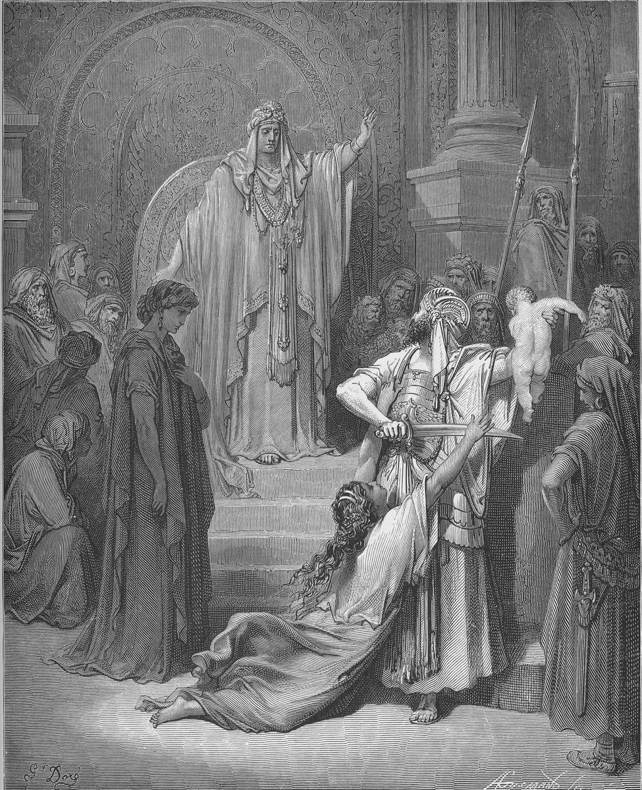

1 Kings 3 — The Mister Translation

1 Kings 3:24–27. The title is the plate’s. The verses say that the king asked for a sword, ordered the living child cut in two, and then said ‘Give her the living child’; they do not say who held the child or the sword, or that the king raised his arm, and they do not describe the hall.

Translator's Notes — verse by verse
A marriage alliance. “And Solomon made a marriage alliance with Pharaoh king of Egypt; and he took Pharaoh’s daughter”: the verb is vayyitchaten, from chatan, “son-in-law”, and “and he made a marriage alliance” stands in two verses, this one and 2 Chronicles 18:1. It is the root of “you shall not make marriages with them” of the seven nations (Deuteronomy 7:3, now on these pages), a list that does not name Egypt (7:1). The ASV has “Solomon made affinity with Pharaoh king of Egypt”. The KJV has “Solomon made affinity with Pharaoh king of Egypt”. The NIV has “Solomon made an alliance with Pharaoh king of Egypt and married his daughter”. The NWT 1984 has “form a marriage alliance with Pharaoh”. The Douay opens the verse with “And the kingdom was established in the hand of Solomon”, which the Hebrew has as the last sentence of chapter 2; Rahlfs’ Greek has the matter of this verse at 2:35c.
Until he finished building. “And brought her to the city of David, until he had finished building his house and the house of Jehovah and the wall of Jerusalem all around”: the word is bayit, “house”, all three times, for the palace and for the temple alike. The ASV has “until he had made an end of building his own house, and the house of Jehovah, and the wall of Jerusalem round about”. The NWT 1984 has “his own house and the house of Jehovah and Jerusalem’s wall all around”. The NIV has “his palace and the temple of the Lord”. The TLB has “his palace and the Temple and the wall around the city”. The page keeps “house” in each place, and the first one named is his own.
“Only.” “Only, the people were sacrificing at the high places, because a house had not been built for the name of Jehovah until those days”: the verse opens with raq, “only”, and verse 3 closes on the same word, “only, at the high places he sacrificed and burned incense”. The law is to destroy “all the places where the nations … served their gods” (Deuteronomy 12:2) and to seek “the place that Jehovah your God chooses … to put his name there” (12:5, both now on these pages). The ASV has “Only the people sacrificed in the high places, because there was no house built for the name of Jehovah until those days”. The NWT 1984 has “Only the people were sacrificing on the high places”. The NIV has “The people, however, were still sacrificing at the high places”. The TLB has “the people of Israel sacrificed their offerings on altars in the hills”.
“Solomon loved Jehovah.” “And Solomon loved Jehovah, walking in the statutes of David his father”: the commandment is “you shall love Jehovah your God” (Deuteronomy 6:5, now on these pages), and “in the statutes of David” stands only here. The ASV has “Solomon loved Jehovah, walking in the statutes of David his father: only he sacrificed and burnt incense in the high places”. The NWT 1984 has “continued to love Jehovah” and “making offerings smoke”. The NIV has “walking according to the instructions given him by his father David, except that he offered sacrifices and burned incense on the high places”. The Geneva has “walking in the ordinances of David his father”. The Douay has “walking in the precepts of David his father”.
The great high place. “And the king went to Gibeon to sacrifice there, for that was the great high place; a thousand burnt offerings Solomon offered up on that altar.” The ASV has “the great high place”. The NWT 1984 has “the great high place”. The NIV has “the most important high place”. The Geneva has “the chief high place”. The TLB has “The most famous of the hilltop altars was at Gibeon”. Gibeon is the city of the Gibeonites (2 Samuel 21:1–2, now on these pages), and the ark was in Jerusalem, in the tent David pitched for it (2 Samuel 6:17).
“Ask what I shall give you.” “In Gibeon Jehovah appeared to Solomon in a dream in the night; and God said: ‘Ask what I shall give you.’” The verse says that Jehovah appeared and that God spoke, and “Ask what I shall give you” stands in two verses, this one and 2 Chronicles 1:7 (now on these pages). The ASV has “Ask what I shall give thee”. The NWT 1984 has “Request what I should give you”. The NIV has “Ask for whatever you want me to give you”. The Douay has “Ask what thou wilt that I should give thee”. The TLB has “told him to ask for anything he wanted”.
A little youth. “You have shown great kindness to your servant David my father, as he walked before you in truth and in righteousness and in uprightness of heart with you”; then “and I am a little youth; I do not know how to go out or come in”. To “go out and come in” is the idiom of leading: Moses’ “I can no longer go out and come in” (Deuteronomy 31:2), the man Moses asks for, “who will go out before them and who will come in before them” (Numbers 27:17), and David, who “went out and came in before the people” (1 Samuel 18:13, all now on these pages); the form of this verse, tse’t uvo, stands only here. The ASV has “I am but a little child; I know not how to go out or come in”. The NWT 1984 has “I am but a little boy. I do not know how to go out and how to come in”. The NIV has “I am only a little child and do not know how to carry out my duties”. The TLB has “I am as a little child who doesn’t know his way around”.
“A hearing heart.” “A great people, that cannot be numbered or counted for multitude”: “cannot be numbered or counted”, lo yimmaneh velo yissafer, stands only here, and the two verbs are the verbs of the census (2 Samuel 24:1, 10, now on these pages). Then: “So give your servant a hearing heart, to judge your people, to discern between good and evil”: “a hearing heart”, lev shome’a, stands only here. The ASV has “an understanding heart”. The KJV has “an understanding heart”. The NIV has “a discerning heart”. The NWT 1984 has “an obedient heart”. The TLB has “an understanding mind”. Rahlfs’ Greek has kardian akouein, “a heart to listen”. “This weighty people of yours” is ha’am hakaved, “the heavy people”: the ASV has “this thy great people”, the NWT 1984 “this difficult people”, the Geneva “this thy mighty people”, and the Douay “this people, thy people which is so numerous”.
What he did not ask. “And the word was good in the eyes of the Lord”: the Hebrew has Adonai, here and in verse 15, and Jehovah in verse 5. The ASV has “And the speech pleased the Lord”. The KJV has “And the speech pleased the Lord”. The NWT 1984 has “the thing was pleasing in the eyes of Jehovah”. The NIV has “The Lord was pleased”. God lists what Solomon did not ask: “many days”, “riches”, “the life of your enemies”. The ASV has “the life of thine enemies”. The NWT 1984 has “the soul of your enemies”. The NIV has “the death of your enemies”. The TLB has “the defeat of your enemies”. What he asked is “understanding, to hear justice”: the ASV has “understanding to discern justice”, the KJV “to discern judgment”, the Geneva “to hear judgment”, and the NIV “discernment in administering justice”.
A wise and understanding heart. “Look, I have given you a wise and understanding heart, so that there has been none like you before you, and after you none shall arise like you”: lev chakham venavon is the pair of Joseph’s “a man of discernment and wisdom” (Genesis 41:33) and Moses’ “men who are wise and discerning” (Deuteronomy 1:13, both now on these pages). The ASV has “so that there hath been none like thee before thee, neither after thee shall any arise like unto thee”. The NIV has “so that there will never have been anyone like you, nor will there ever be”. The NWT 1984 has “after you there will not rise up one like you”. The TLB has “a wiser mind than anyone else has ever had or ever will have”. “Both riches and honor” is osher vekavod, with kavod from the root of the “heavy”, kaved, of verse 9: the ASV has “riches and honor”, the NIV “wealth and honor” and the NWT 1984 “riches and glory”.
“If you walk in my ways.” “And if you walk in my ways, to keep my statutes and my commandments, as David your father walked, then I will lengthen your days”: the “if” is the one of David’s charge, “if your sons keep their way” (1 Kings 2:3–4, now on these pages), and “and I will lengthen your days” stands only here; the same verb is in “so that you may prolong your days” (Deuteronomy 4:40, now on these pages). The ASV has “then I will lengthen thy days”. The NWT 1984 has “I will also lengthen your days”. The NIV has “I will give you a long life”. The Geneva has “I will prolong thy days”.
“And look, it was a dream.” “And Solomon woke — and look, it was a dream”: “and look, a dream” stands in two verses, this one and Pharaoh’s waking (Genesis 41:7, now on these pages). He then “came to Jerusalem and stood before the ark of the covenant of the Lord, and offered up burnt offerings and made peace offerings, and made a feast for all his servants”. The ASV has “And Solomon awoke; and, behold, it was a dream”. The NWT 1984 has “When Solomon awoke, why, here it had been a dream”. The NIV has “Then Solomon awoke —and he realized it had been a dream”. The Douay has “and perceived that it was a dream”. Rahlfs’ Greek has him stand before the ark “in Zion”.
Two women, prostitutes. “Then two women, prostitutes, came to the king, and stood before him”: “two women, prostitutes”, stands only here, and zonah is Rahab’s word (Joshua 2:1, now on these pages). The NIV has “two prostitutes”. The NWT 1984 has “two women, prostitutes”. The ASV has “two women that were harlots”. The Douay has “two women that were harlots”. The TLB has “two young prostitutes”. The first speaks: “Oh, my lord”, as Hannah to Eli (1 Samuel 1:26, now on these pages); the ASV has “Oh, my lord”, the NIV “Pardon me, my lord”, the NWT 1984 “Excuse me, my lord”.
The night. “And this woman’s son died in the night, because she lay on him”: the ASV has “because she lay upon it”, the KJV “because she overlaid it”, the NIV “because she lay on him”, the NWT 1984 “because she lay upon him”, and the TLB “when she rolled over on it in her sleep and smothered it”, which the Hebrew does not say. “And she arose in the middle of the night and took my son from beside me, while your maidservant slept, and laid him in her bosom; and her dead son she laid in my bosom”: the ASV has “while thy handmaid slept”, the NWT 1984 “while your slave girl herself was asleep”, and the NIV “while I your servant was asleep”. There was “no stranger” with them in the house, and there is no witness.
“I considered him.” “And I rose in the morning to nurse my son, and look, he was dead; and I considered him in the morning, and look, he was not my son, whom I had borne”: the verb is hitbonen, from bin, the root of “discern” and “understanding” in verses 9, 11 and 12. The ASV has “when I had looked at it in the morning”. The KJV has “when I had considered it in the morning”. The NIV has “when I looked at him closely in the morning light”. The NWT 1984 has “So I examined him closely in the morning”. The Douay has “considering him more diligently”.
The same sentence twice. “And the other woman said: ‘No, for my son is the living, and your son is the dead.’ And this one said: ‘No, for your son is the dead, and my son is the living.’ So they spoke before the king.” The two women say the same sentence to each other with the words turned round. The ASV has “Nay; but the living is my son, and the dead is thy son. And this said, No; but the dead is thy son, and the living is my son”. The NIV has “No! The living one is my son; the dead one is yours”. The NWT 1984 has “No, but my son is the living one and your son is the dead one!”. The TLB has “It certainly was her son, and the living child is mine”. The text gives each of them no name and no proof.
A sword. “And the king said: ‘This one says: This is my son, the living, and your son is the dead; and that one says: No, for your son is the dead, and my son is the living.’ And the king said: ‘Bring me a sword.’” The ASV has “Fetch me a sword”, the KJV “Bring me a sword” and the NWT 1984 “get me a sword”. “Cut the living child in two; and give the half to one, and the half to the other”: the NIV has “Cut the living child in two and give half to one and half to the other”, the NWT 1984 “sever the living child in two”, and the ASV “Divide the living child in two”.
Her compassion grew warm. “And the woman whose son was the living one said to the king — for her compassion grew warm toward her son”: “grew warm … compassion”, nikhmeru rachamim, stands in two verses, this one and Joseph for Benjamin, “his compassion grew warm toward his brother” (Genesis 43:30, now on these pages; see rachamim). The ASV has “her heart yearned over her son”. The KJV has “her bowels yearned upon her son”. The NIV has “was deeply moved out of love for her son”. The Geneva has “her compassion was kindled toward her son”. The NWT 1984 has “her inward emotions were excited toward her son”. Rahlfs’ Greek has “her womb was stirred”, etarachthē hē mētra autēs.
“She is his mother.” “Give her the living child, and by no means kill him”, and the other: “Neither mine nor yours shall he be; cut.” The ASV has “in no wise slay it” and “It shall be neither mine nor thine; divide it”. The NIV has “Don’t kill him!” and “Neither I nor you shall have him. Cut him in two!”. The NWT 1984 has “Do not by any means put him to death”. The king’s answer is “Give her the living child, and by no means kill him; she is his mother”: the Hebrew has “her” and “she”, and no word for the first woman or the second; the NIV has “Give the living baby to the first woman”, and the TLB “Give the baby to the woman who wants him to live”.
The wisdom of God. “And all Israel heard of the judgment which the king had judged, and they feared the king; for they saw that the wisdom of God was within him, to do justice”: “the wisdom of God” stands only here; “judgment” and “justice” are the one word mishpat, the word of “to hear justice” in verse 11, and “they feared” and “they saw” are written almost alike in the Hebrew. The ASV has “the judgment which the king had judged … to do justice”. The KJV has “to do judgment”. The NIV has “the verdict the king had given, they held the king in awe, because they saw that he had wisdom from God to administer justice”. The NWT 1984 has “the wisdom of God was within him to execute judicial decision”. Rahlfs’ Greek has phronēsis theou, “the prudence of God”.
Patterns worth carrying forward
Where this translation keeps the words exact and distinct: “a marriage alliance”, as in “make marriages” of Deuteronomy 7:3; “house” for bayit of the palace and the temple alike; “only” for raq in verses 2 and 3; “the high places”; “the statutes of David”; “ask what I shall give you”; “kindness” for chesed; “go out or come in”; “numbered or counted”, as in 2 Samuel 24; “a hearing heart”; “weighty” for kaved and “honor” for kavod; “the Lord” for Adonai, against “Jehovah” for the name; “a wise and understanding heart”; “lengthen your days”; “woke — and look, it was a dream”, as in Genesis 41:7; “prostitutes”, as in Joshua 2:1; “considered him”; “grew warm” for nikhmeru, as in Genesis 43:30; “by no means kill him”; and “judgment” and “justice” for mishpat; with the formulas that differ in the notes.
Echoes paid. David’s charge and its “if” (1 Kings 2:3–4); the seven nations and the marriages forbidden (Deuteronomy 7:1, 3); the places to be destroyed and the place for the name (Deuteronomy 12:2, 5); “you shall love Jehovah” (Deuteronomy 6:5); the Gibeonites (2 Samuel 21:1–2) and the ark in David’s tent (2 Samuel 6:17); “go out and come in” for Moses, Joshua and David (Deuteronomy 31:2; Numbers 27:17; 1 Samuel 18:13); “numbered” and “counted” (2 Samuel 24:1, 10); the wise and discerning of Joseph and Moses (Genesis 41:33; Deuteronomy 1:13); “prolong your days” (Deuteronomy 4:40); Pharaoh’s waking from his dream (Genesis 41:7); Rahab the prostitute (Joshua 2:1); Hannah’s “Oh, my lord” (1 Samuel 1:26); Joseph’s compassion growing warm (Genesis 43:30); and the same dream and “Ask what I shall give you” in Chronicles (2 Chronicles 1:7).
Echoes planted. The marriage alliance in the days of Jehoshaphat (2 Chronicles 18:1); and the Greek’s placing of Pharaoh’s daughter in the last verses of chapter 2. None of these is translated here yet.
Next in this book: 1 Kings 4 — Solomon is king over all Israel; a list of his princes, beginning with Azariah son of Zadok the priest; twelve officers who provide for the king, a month each; and Judah and Israel, many as the sand by the sea, eating and drinking and making merry.